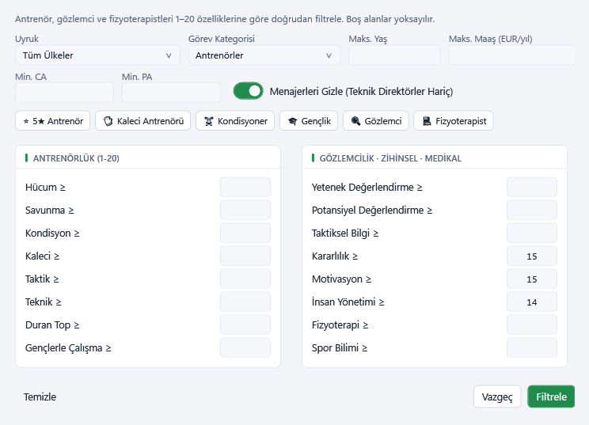

FM27 için hızlı ve ücretsiz gerçek zamanlı editör ve scout.
Oyun açıkken oyuncuları, personelleri, kulüpleri ve finansı anında düzenleyebilir; gerçek regenleri ve 5 yıldızlı antrenörleri zahmetsizce bulabilirsiniz.
Kurulum gerektirmez, tek dosya olarak çalışır.

Bir editörden ve scout aracından beklediğiniz her şey.
Oyuncu aramadan personel transferine, kulüp tesislerinden canlı tema geçişine kadar tüm araçlar tek çatı altında.
Oyuncu Arama & Scout
-
Gerçek Regen (Newgen) FiltresiGerçek genç oyuncularla karışmadan sadece oyunun ürettiği yeni yetenekleri listeler.
-
Gelişmiş Oyuncu Filtresi & Hazır ŞablonlarUyruk, bölge, mevki, rol reytingi, sözleşme bitişi, CA/PA ve gizli özelliklerle (Profesyonellik, İstikrar, Önemli Maçlar, Sakatlık Eğilimi) detaylı tarama yapabilirsiniz.
-
8 Eksenli Radar, Karşılaştırma & Oyuncu Kartıİki oyuncuyu yan yana kıyaslayabilir, sağ panelden hızlı önizleme açabilir veya tek tıkla paylaşılabilir PNG oyuncu kartı oluşturabilirsiniz.
-
Wonderkid Oluşturucu, Model Kişilik & Tercih Edilen HareketlerTekrar zar atılabilen dengeli Wonderkid üretici, tek tıkla kişilik iyileştirme ve tüm oyuncu alışkanlıklarını (Traits) düzenleme imkanı sunar.
Personel & Transfer Yönetimi
-
5★ Antrenör, Gözlemci & Fizyoterapist Filtresi1–20 personel özelliklerine göre doğrudan arama yapabilir, tek tıkla "TD Hariç" seçeneğiyle boştaki teknik direktörleri gizleyebilirsiniz.
-
Rol Seçerek Personel İşe Alma & TaşımaBoştaki veya sözleşmeli personeli istediğiniz göreve (Asistan Menajer, Kaleci Antrenörü, Gözlemci, Fizyoterapist vb.) atayarak kulübe ekleyebilirsiniz.
-
Hızlı Oyuncu Transferi & Kiralık İşlemleriBedelsiz veya bonservisli anında kulüp değişimi, serbest oyuncu imzalatma, kiralık oyuncuyu geri çağırma veya kalıcı transfer yapabilirsiniz.
-
Sözleşme Maddeleri, İkinci Uyruk & DillerSerbest kalma bedeli ve bonus maddeleri ekleyip silebilir; oyuncunun ana uyruğunu, ikinci uyruklarını, konuştuğu dilleri ve favori kulüplerini düzenleyebilirsiniz.
Kulüp, Kadro & Finans
-
Tek Tıkla Tüm Kadroyu Maça HazırlamaSakatlıkları iyileştirebilir, cezaları kaldırabilir; kondisyon, maç formu, moral ve sözleşme memnuniyetini tüm takımda anında yükseltebilirsiniz.
-
En İyi 11 & Kadro DerinliğiSeçtiğiniz dizilişe göre kulübün en güçlü ilk 11'ini ve yedek derinliğini saha görünümünde otomatik çıkarır.
-
Finans, Tesisler & Kulüp İlişkileriBakiye, transfer ve maaş bütçesini düzenleyebilir; tüm tesisleri tek tıkla 20 yapabilir; rakip kulüpleri, efsaneleri ve sevilmeyen kişileri yönetebilirsiniz.
-
Toplu Düzenleme, Sözleşme Uzatma & DondurmaBirden fazla oyuncunun özelliklerini toplu değiştirebilir, tüm kadronun sözleşmesini toplu uzatabilir veya seçtiğiniz değerleri sabit tutmak için dondurabilirsiniz.
Kullanım Rahatlığı & Güvenlik
-
4 Canlı Tema & Logo / Yüz Paketi DesteğiFM Gece Laciverti, OLED Siyah, WTCS Kömür & Altın ve Açık tema arasında anında geçiş yapabilirsiniz. FM graphics klasöründeki logolar ve yüzler otomatik yüklenir.
-
Komut Paleti, Global Arama & Hızlı KısayollarOyuncu, kulüp, ülke ve liglerde anında arama yapabilir; fare tekeriyle sayıları hızla değiştirebilir; kısa liste (Shortlist) oluşturup CSV dışa aktarabilirsiniz.
-
Doğrulamalı Yazma & Tam Geri Alma GeçmişiYazmadan önce bellek adresi doğrulanır, yapılan her düzenleme oturum geçmişinde tutulur ve tek tuşla geri alınabilir.
-
Kayıt Yedekleme & Salt Okunur ModÜst bardan tek tıkla güncel kariyer kaydınızın yedeğini alabilir; sadece scout yapmak isterseniz Salt Okunur modu açabilirsiniz.
12 Dil
Ayarlardan dilediğiniz dili seçip kullanabilirsiniz.
Hakkında
Squadeditor, Football Manager topluluğu için tamamen ücretsiz ve açık kaynaklı bir alternatif sunmak amacıyla geliştirildi. Karmaşık arayüzler ve ücretli duvarlar olmadan; hızlı çalışan, kayda zarar vermeyen ve gerçekten oyuncunun işini gören bir araç olmasını hedefledim.
Eklememi istediğiniz bir özellik, hoşunuza gitmeyen bir detay, öneri, şikayet veya memnuniyetiniz olursa sosyal medya hesaplarımdan ya da GitHub üzerinden bana doğrudan ulaşabilirsiniz.
Tamamen ücretsiz mi?
Evet. Squadeditor tamamen ücretsiz ve açık kaynaklıdır. Lisans anahtarı, abonelik veya kilitli özellik yoktur.
Windows SmartScreen uyarısı çıkarsa ne yapmalıyım?
Bağımsız açık kaynaklı Windows uygulamalarında ücretli dijital imza sertifikası bulunmadığı için Windows ilk açılışta uyarı gösterebilir. "Ek bilgi → Yine de çalıştır" adımıyla güvenle açabilirsiniz.
Kariyer kaydıma zarar verir mi?
Her yazma öncesinde bellek doğrulaması yapılır ve tüm değişiklikler geri alınabilir. Yine de büyük düzenlemelerden önce üst bardaki Yedek butonuyla kaydınızın kopyasını almanız en güvenli yöntemdir.
Nasıl kullanılır ve hangi sürümle uyumlu?
Windows üzerinde Football Manager 27 (27.0.1) ile uyumludur. Oyunda kariyerinizi yükledikten sonra Squadeditor'ı açmanız yeterli; otomatik bağlanır.
Hemen indir.
Windows için tek dosya, kurulum gerektirmez ve tamamen ücretsiz.